iOS developer guide
This guide aims to present the various iOS SDK accessibility options.
Through different categories, it explains how to use the accessibility attributes / methods and provides links to the Apple official documentation.
Code snippets are also available to show the different possible implementations { (Swift 5.1, Objective C) + (Xcode 11, iOS 13) }.
Element trait #
The accessibilityTraits attribute allows to specify the trait of an element to the accessibility API.
Then, the accessibilityTrait attribute plays an important role on the element vocalization because it enables VoiceOver to recognize its type.
This accessibility attribute is available via the interface builder but also programmatically.
There are many available traits. The most commonly used are:
- accessibilityTraitNone : removes any semantic value to the element.
- accessibilityTraitButton : adds the “button” trait, the element is seen as a button by VoiceOver.
- accessibilityTraitLink : useful to define a label as a “link”.
- accessibilityTraitHeader : defines an element as a header (see the « Title and header » section).
- accessibilityTraitAdjustable : defines an element as an “adjustable” element, that is to say an element that users can adjust in a continuous manner, such as a slider or a picker view (see the VoiceOver user guide).
- (void)customTraits() {
//Specified UIPageControl with the ’ajustable’ trait.
pageControl.accessibilityTraits = UIAccessibilityTraitAdjustable;
//Added header.
defaultHeaderViewCell.accessibilityTraits = UIAccessibilityTraitHeader;
}
func customTraits() {
//Specified UIPageControl with the ’ajustable’ trait.
pageControl.accessibilityTraits = .adjustable
//Added header.
defaultHeaderViewCell.accessibilityTraits = .header
}
The accessibilityTrait attribute is actually a bitmask in which each element has its own value.

It's then possible to add and remove some traits after having checked their existence in the bitmask for instance.
- (void)changeTraits {
//Dedicated trait set with no other option.
onePageButton.accessibilityTraits = UIAccessibilityTraitButton | UIAccessibilityTraitLink;
//Added traits to the existing ones.
pageControl.accessibilityTraits |= UIAccessibilityTraitHeader; //Only one trait.
pageControl.accessibilityTraits |= UIAccessibilityTraitButton + UIAccessibilityTraitLink; //Many traits.
//Remove a trait.
onePageButton.accessibilityTraits &= ~UIAccessibilityTraitLink;
//Check out the bitmask trait existence.
if ((pageControl.accessibilityTraits & UIAccessibilityTraitHeader) != 0) {
// Do the job if '.header' is one of the traits...
}
}
func changeTraits() {
//Dedicated trait set with no other option.
onePageButton.accessibilityTraits = [.button, .link]
//Added traits to the existing ones.
pageControl.accessibilityTraits.insert(.header) //Only one trait.
pageControl.accessibilityTraits.formUnion([.button, .link]) //Many traits.
//Remove a trait.
onePageButton.accessibilityTraits.remove(.link)
//Check out the bitmask trait existence.
if (pageControl.accessibilityTraits.rawValue & UIAccessibilityTraits.header.rawValue == UIAccessibilityTraits.header.rawValue) {
// Do the job if '.header' is one of the traits...
}
}
Text alternatives #
On iOS, the vocalization of an element is done through four attributes: label, hint, value and trait.
The order of vocalization is always as follows: label, value, trait and hint. This order cannot be changed and the vocalization is performed only once.
A section of this guide is dedicated to the trait, we describe here the other three:
- accessibilityLabel : the
labelredefines the text read by VoiceOver. This allows a component to be more explicit than the text displayed on the screen. For example, for a button whose title is “OK”, this attribute can indicate that the button is used to confirm an action. - accessibilityValue : the
valueof an element is by default the completion percentage (e.g. a progress bar percentage). Note that for most elements available in the SDK, this value does not need to be set (the system automatically sets the value). - accessibilityHint : the
hintdescribes the component’s behaviour. Example: “click here to get the result”.
These accessibility attributes are available via the builder interface but also programmatically. Anything inheriting from UIView has these attributes by default. These attributes accept an optional string, and are therefore easily localizable.
@interface ChangeTextView() {
__weak IBOutlet UILabel * myLabel;
__weak IBOutlet UIProgressView * myProgressView;
}
@end
@implementation ChangeTextView
- (void)viewDidAppear:(BOOL)animated {
[super viewDidAppear:animated];
myLabel.accessibilityLabel = @"hello";
myLabel.accessibilityHint = @"This is an added comment.";
myProgressView.accessibilityValue = @"45 per cent";
}
@end
class ChangeTextView: UIViewController {
@IBOutlet weak var myLabel: UILabel!
@IBOutlet weak var myProgressView: UIProgressView!
override func viewDidAppear(_ animated: Bool) {
super.viewDidAppear(animated)
myLabel.accessibilityLabel = "hello"
myLabel.accessibilityHint = "This is an added comment."
myProgressView.accessibilityValue = "45 per cent"
}
}
Date, time and numbers #
Using VoiceOver for reading date, time and numbers may become rapidly a headache if some steps fade into obscurity.
The rendering isn't natural if the date or time data are imported text in a label.
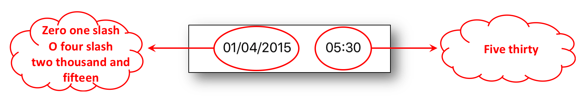
Incoming data must be formatted to obtain a natural and understandable descriptive vocalization.
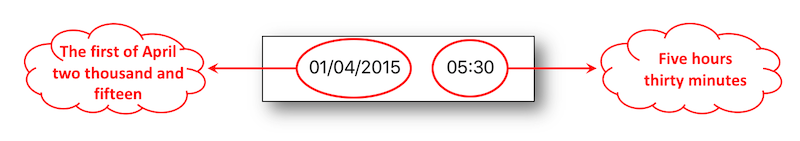
NSDateFormatter * dateFormatter = [[NSDateFormatter alloc]init];
[dateFormatter setDateFormat:@"dd/MM/yyyy HH:mm"];
NSDate * date = [dateFormatter dateFromString:@"01/04/2015 05:30"];
dateLabel.text = [NSDateFormatter localizedStringFromDate:date
dateStyle:NSDateFormatterShortStyle
timeStyle:NSDateFormatterNoStyle];
dateLabel.accessibilityLabel = [NSDateFormatter localizedStringFromDate:date
dateStyle:NSDateFormatterMediumStyle
timeStyle:NSDateFormatterNoStyle];
hourLabel.text = [NSDateFormatter localizedStringFromDate:date
dateStyle:NSDateFormatterNoStyle
timeStyle:NSDateFormatterShortStyle];
NSDateComponents * hourComponents = [[NSCalendar currentCalendar] components:NSCalendarUnitHour | NSCalendarUnitMinute
fromDate:date];
hourLabel.accessibilityLabel = [NSDateComponentsFormatter localizedStringFromDateComponents:hourComponents
unitsStyle:NSDateComponentsFormatterUnitsStyleSpellOut];
let dateFormatter = DateFormatter()
dateFormatter.dateFormat = "dd/MM/yyyy HH:mm"
let date = dateFormatter.date(from: "01/04/2015 05:30")
dateLabel.text = DateFormatter.localizedString(from: date!,
dateStyle: .short,
timeStyle: .none)
dateLabel.accessibilityLabel = DateFormatter.localizedString(from: date!,
dateStyle: .medium,
timeStyle: .none)
hourLabel.text = DateFormatter.localizedString(from: date!,
dateStyle: .none,
timeStyle: .short)
let hourComponents = Calendar.current.dateComponents([.hour, .minute],
from: date!)
hourLabel.accessibilityLabel = DateComponentsFormatter.localizedString(from: hourComponents,
unitsStyle: .spellOut)
If a number is imported as is in a labeltext, the vocalization will be made on each figure rendering a final value that may be hard to be well understood.
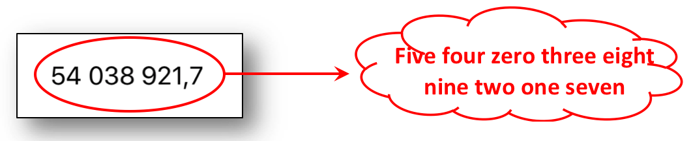
As the previous sheet dealing with date and time, the incoming data must be formatted to be analyzed and vocalized according to the proper value of the explained number.
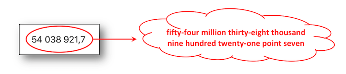
NSNumber * numberValue = @54038921.7;
NSNumberFormatter * numberFormatter = [[NSNumberFormatter alloc]init];
numberFormatter.numberStyle = NSNumberFormatterDecimalStyle;
numberLabel.text = [numberFormatter stringFromNumber:numberValue];
numberLabel.accessibilityLabel = [NSNumberFormatter localizedStringFromNumber:numberValue
numberStyle:NSNumberFormatterSpellOutStyle];
let numberValue = NSNumber(value: 54038921.7)
numberLabel.text = NumberFormatter.localizedString(from: numberValue,
number: .decimal)
numberLabel.accessibilityLabel = NumberFormatter.localizedString(from: numberValue,
number: .spellOut)
Once more, formatting data is an essential step for a phone number vocalization including the special cases of the "0" figures.
The example hereunder deals with the french dialing but the rationale behind may be applied to any international type of dialing format.
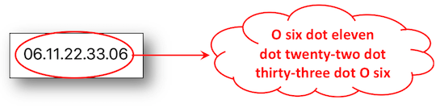
The idea of this format is based on a comma separation of each pair of figures that will provide the vocal punctuation.
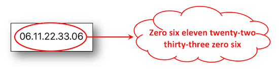
NSString * phoneNumberValue = @"06.11.22.33.06";
NSArray * phoneNumberElts = [phoneNumberValue componentsSeparatedByString:@"."];
NSNumberFormatter * nbFormatter = [[NSNumberFormatter alloc]init];
nbFormatter.numberStyle = NSNumberFormatterSpellOutStyle;
NSMutableString * spelledOutString = [[NSMutableString alloc]init];
[phoneNumberElts enumerateObjectsUsingBlock:^(id _Nonnull obj,
NSUInteger idx,
BOOL * _Nonnull stop) {
NSString * elt = (NSString *)obj;
if (idx != 0) {
[spelledOutString appendString:@","];
}
if ([elt hasPrefix:@"0"]) {
NSString * firstFigure = [nbFormatter stringFromNumber:@([[elt substringToIndex:1] integerValue])];
NSString * secondFigure = [nbFormatter stringFromNumber:@([[elt substringFromIndex:1] integerValue])];
[spelledOutString appendString:firstFigure];
[spelledOutString appendString:secondFigure];
} else {
[spelledOutString appendString:[nbFormatter stringFromNumber:@([elt integerValue])]];
}
}];
phoneNumberLabel.text = phoneNumberValue;
phoneNumberLabel.accessibilityLabel = spelledOutString;
let phoneNumberValue = "06.11.22.33.06"
let phoneNumberElts = phoneNumberValue.components(separatedBy: ".")
let nbFormatter = NumberFormatter()
nbFormatter.numberStyle = .spellOut
var spelledOutString = String()
for (index, elt) in phoneNumberElts.enumerated() {
if (index != 0) {
spelledOutString.append(",")
}
if (elt.hasPrefix("0")) {
let firstFigureValue = Int(String(elt[elt.startIndex]))!
let firstFigure = nbFormatter.string(from: NSNumber(value:firstFigureValue))
spelledOutString.append(firstFigure!)
let secondFigureValue = Int(String(elt[elt.index(elt.startIndex, offsetBy: 1)]))!
let secondFigure = nbFormatter.string(from: NSNumber(value:secondFigureValue))
spelledOutString.append(secondFigure!)
} else {
let figure = nbFormatter.string(from: NSNumber(value:Int(elt)!))
spelledOutString.append(figure!)
}
}
phoneNumberLabel.text = phoneNumberValue
phoneNumberLabel.accessibilityLabel = spelledOutString
Trigger a vocalization #
To trigger a vocalization, just call the UIAccessibilityPostNotification method passing the notification allowing to trigger a vocalization (UIAccessibilityAnnouncementNotification) and the string to vocalize as parameters.
Note: the vocalization is done in the system’s language.
UIAccessibilityPostNotification(UIAccessibilityAnnouncementNotification,
@"This is a VoiceOver message.");
UIAccessibility.post(notification: .announcement,
argument: "This is a VoiceOver message.")
Change the vocalization language #
To change the vocalization language of VoiceOver for a word or a sentence, one can use the accessibilityLanguage attribute.
Available through the UIAccessibility informal protocol, this attribute allows to specify a language for a dedicated text.
If we use the accessibilityLanguage attribute on a UILabel, it will be vocalized by VoiceOver in the language set on this attribute.
- (IBAction)tapHere:(UIButton *)sender {
myLabel.accessibilityLanguage = @"fr";
myLabel.accessibilityLabel = @"Ceci est un nouveau label. Merci.";
UIAccessibilityPostNotification(UIAccessibilityLayoutChangedNotification, myLabel);
}
@IBAction func tapHere(_ sender: UIButton) {
myLabel.accessibilityLanguage = "fr"
myLabel.accessibilityLabel = "Ceci est un nouveau label. Merci."
UIAccessibility.post(notification: UIAccessibility.Notification.layoutChanged,
argument: myLabel)
}
Notify a content change #
When there is a content change in the current page, it is possible to notify the accessibility API using several types of notifications.
To do that, we must send the change notification to the accessibility API using the following UIAccessibilityPostNotification method.
There are several types of change notifications but the most two commonly used are:
- UIAccessibilityLayoutChangedNotification : notifies that a part of the page has changed with 2 possible incoming parameters (a
NSStringor aUIObject).
With aNSString, the notification behaves like a UIAccessibilityAnnouncementNotification with a VoiceOver vocalization.
With aUIObject, focus is shifted to the user interface element.
This notification is very similar to the UIAccessibilityAnnouncementNotification but should come as a result of dynamic content being deleted or added to the current view. - UIAccessibilityScreenChangedNotification : notifies that the whole page has changed including
nilor aUIObjectas incoming parameters.
Withnil, the first accessible element in the page is focused.
With aUIObject, focus is shifted to the specified element with a VoiceOver.
This notification comes along with a vocalization including a sound like announcing a new page.
//The element 'myLabel' is focused and vocalized with its new value.
- (IBAction)tapHere:(UIButton *)sender {
myLabel.accessibilityLabel = @"This is a new label.";
UIAccessibilityPostNotification(UIAccessibilityLayoutChangedNotification, myLabel);
}
//The first accessible element in the page is focused and vocalized with a sound like announcing a new page.
- (IBAction)clic:(UIButton *)sender {
UIAccessibilityPostNotification(UIAccessibilityScreenChangedNotification, nil);
}
//The element 'myLabel' is focused and vocalized with its new value.
@IBAction func tapHere(_ sender: UIButton) {
myLabel.accessibilityLabel = "This is a new label."
UIAccessibility.post(notification: UIAccessibility.Notification.layoutChanged,
argument: myLabel)
}
//The first accessible element in the page is focused and vocalized with a sound like announcing a new page.
@IBAction func clic(_ sender: UIButton) {
UIAccessibility.post(notification: UIAccessibility.Notification.screenChanged,
argument: nil)
}
Hide elements #
It is possible via an accessibility attribute to hide elements from accessibility tools (e.g. VoiceOver).
By extension, it is possible to force some elements to be visible to accessibility tools.
- isAccessibilityElement: boolean to specify that an element is visible or not to the Accessibility API (VoiceOver or other).
- accessibilityElementsHidden: boolean to indicate that the children elements of the target element are visible or not to the Accessibility API.
- accessibilityViewIsModal: boolean that can make visible or not the sibling elements of the target element to the Accessibility API.
A theoretical explanation and a practical example are provided in a video detailed in the WWDC part.
TheaccessibilityElementattribute is available via the interface builder but can also be used directly through the code.
The other two attributes are available only through the code.
A red square will be drawn and contain two other squares (blue and yellow) in order to apply the attributes defined in the Details sheet.

- (void)viewDidAppear:(BOOL)animated {
[super viewDidAppear:animated];
//Creation of an element inside which 2 other children elements will be inserted.
CGRect redParentViewRect = CGRectMake(100.0, 100.0, 40.0, 40.0);
UIView * myRedParentView = [[UIView alloc]initWithFrame:redParentViewRect];
myRedParentView.backgroundColor = [UIColor redColor];
[self.view addSubview:myRedParentView];
//The target element musn't be accessible so as to be considered as a container to its children elements.
//If this attribute is 'YES', the target element will be the only one accessible element.
myRedParentView.isAccessibilityElement = NO;
//The elements contained in the target element won't be accessible even if they're defined as such.
//If this attribute is 'NO' and the previous one is 'NO', only the children elements will be accessible.
myRedParentView.accessibilityElementsHidden = NO;
[self createViewWithColor:[UIColor yellowColor]
inside:myRedParentView];
[self createViewWithColor:[UIColor blueColor]
inside:myRedParentView];
}
- (void)createViewWithColor:(UIColor*)color
inside:(UIView*)parentView {
float delta = (color == [UIColor yellowColor]) ? 0.0 : 20.0;
CGRect rect = CGRectMake(10.0 + delta, 10.0 + delta, 10.0, 10.0);
UIView * theView = [[UIView alloc]initWithFrame:rect];
theView.backgroundColor = color;
[parentView addSubview:theView];
theView.isAccessibilityElement = YES;
}
override func viewDidAppear(_ animated: Bool) {
super.viewDidAppear(animated)
//Creation of an element inside which 2 other children elements will be inserted.
let redParentViewRect = CGRect.init(x: 100.0,
y: 100.0,
width: 40.0,
height: 40.0)
let myParentView = UIView.init(frame: parentViewRect)
myRedParentView.backgroundColor = .red
self.view.addSubview(myRedParentView)
//The target element musn't be accessible so as to be considered as a container to its children elements.
//If this attribute is 'true', the target element will be the only one accessible element.
myRedParentView.isAccessibilityElement = true
//The elements contained in the target element won't be accessible even if they're defined as such.
//If this attribute is 'false' and the previous one is 'false', only the children elements will be accessible.
myRedParentView.accessibilityElementsHidden = false
self.createViewWithColor(.yellow, inside: myRedParentView)
self.createViewWithColor(.blue, inside: myRedParentView)
}
func createViewWithColor(_ color:UIColor, inside parentView:UIView) {
let delta:CGFloat = ((color == .yellow) ? 0.0 : 20.0)
let rect = CGRect.init(x: 10.0 + delta,
y: 10.0 + delta,
width: 10.0,
height: 10.0)
let theView = UIView.init(frame: rect)
theView.backgroundColor = color
parentView.addSubview(theView)
theView.isAccessibilityElement = true
}
Grouping elements #
Grouping elements may be used to vocalize the bundle once and to associate a dedicated action to it.
We wish to obtain a 'label' and a 'switch control' as one unique block behaving like a switch control.
In this case, a view must be created to encapsulate all the elements and an action must be implemented (only the container must be an accesible element).
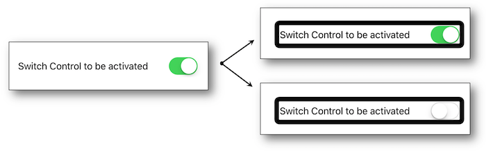
Create your wrapper as an accessible element :
#import "MyViewController.h"
#import "MyWrapView.h"
@interface MyViewController ()
@property (weak, nonatomic) IBOutlet UILabel * myLabel;
@property (weak, nonatomic) IBOutlet UISwitch * mySwitch;
@end
@implementation MyViewController
- (void)viewDidAppear:(BOOL)animated {
[super viewDidAppear:animated];
//Create the view that will encapsulate the 'label' and the 'Switch Control'.
MyWrapView * wrap = [[MyWrapView alloc] initWith:_myLabel
and:_mySwitch];
[self.view addSubview:wrap];
}
@end
class MyViewController: UIViewController {
@IBOutlet weak var myLabel: UILabel!
@IBOutlet weak var mySwitch: UISwitch!
override func viewDidAppear(_ animated: Bool) {
super.viewDidAppear(animated)
//Create the view that will encapsulate the 'label' and the 'Switch Control'.
let wrap = MyWrapView.init(with: myLabel,
and: mySwitch)
self.view.addSubview(wrap)
}
}
... and implement the wrapper class to define accurately the
action when a double tap occurs :
@implementation MyWrapView
//Indexes for the array containing all the wrapped elements.
int indexLabel = 0;
int indexSwitch = 1;
- (instancetype)initWith:(UILabel *)label and:(UISwitch *)aSwitch {
CGRect viewFrame = CGRectUnion(label.frame, aSwitch.frame);
MyWrapView * wrapView = [[MyWrapView alloc]initWithFrame:viewFrame];
wrapView.accessibilityElements = @[label, aSwitch];
NSString * switchValue = (aSwitch.isOn) ? @"on" : @"off";
wrapView.isAccessibilityElement = YES;
wrapView.accessibilityLabel = [NSString stringWithFormat:@"the switch control is %@", switchValue.description];
wrapView.accessibilityHint = @"tap twice to change the switch control status.";
return wrapView;
}
//Function called by the system when a double tap occurs on the selected wrapper.
- (BOOL)accessibilityActivate {
UISwitch * theSwitch = self.accessibilityElements[indexSwitch];
[theSwitch setOn:!(theSwitch.isOn)];
NSString * switchValue = (theSwitch.isOn) ? @"on" : @"off";
self.accessibilityLabel = [NSString stringWithFormat:@"the switch control is %@", switchValue.description];
return YES;
}
@end
class MyWrapView: UIView {
//Indexes for the array containing all the wrapped elements.
let indexLabel = 0
let indexSwitch = 1
override init(frame: CGRect) {
super.init(frame: frame)
}
required init?(coder aDecoder: NSCoder) {
super.init(coder: aDecoder)
}
convenience init(with label: UILabel,and aSwitch: UISwitch) {
let viewFrame = label.frame.union(aSwitch.frame)
self.init(frame: viewFrame)
self.accessibilityElements = [label, aSwitch]
let switchValue = (aSwitch.isOn) ? "on" : "off"
self.isAccessibilityElement = true
self.accessibilityLabel = "the switch control is " + switchValue.description
self.accessibilityHint = "tap twice to change the switch control status."
}
//Function called by the system when a double tap occurs on the selected wrapper.
override func accessibilityActivate() -> Bool {
let theSwitch = self.accessibilityElements?[indexSwitch] as? UISwitch
theSwitch?.setOn(!((theSwitch?.isOn)!), animated: false)
let switchValue = (theSwitch?.isOn)! ? "on" : "off"
self.accessibilityLabel = "the switch control is " + switchValue.description
return true
}
}
We have a button, a label and a switch control to be regrouped in a single block whose activation will change the switch control status automatically without defining any action like before.
The easiest way would be to place the switch control in the middle of the created frame in order to locate its accessibilityActivationPoint directly on it.
Unfortunately, that's not always possible.
A new accessible element must then be created to gather all the desired objects and its accessibilityActivationPoint has to be defined on the switch control.
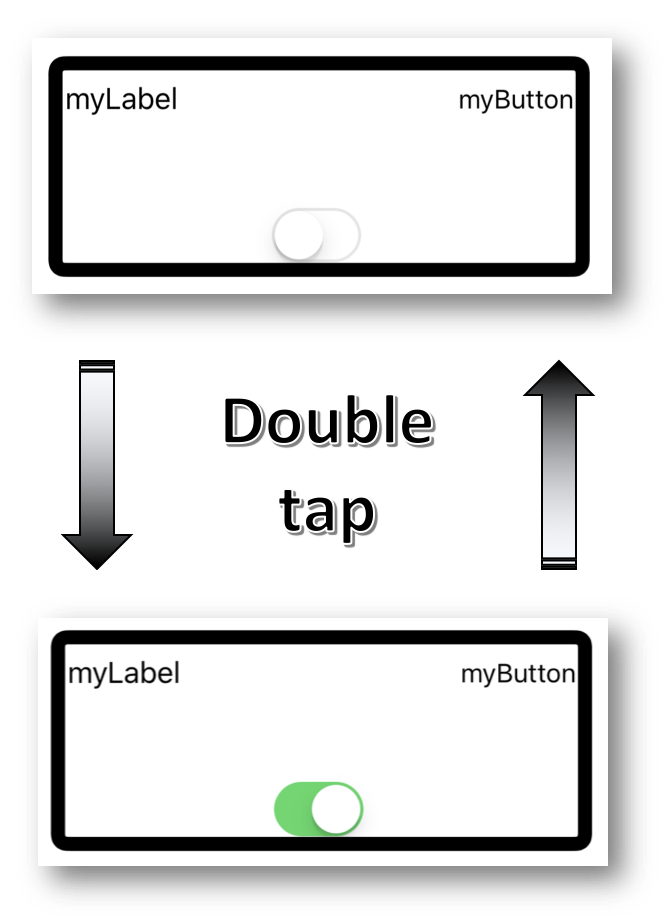
@interface ActivationPointViewController ()
@property (weak, nonatomic) IBOutlet UIButton * myButton;
@property (weak, nonatomic) IBOutlet UILabel * myLabel;
@property (weak, nonatomic) IBOutlet UISwitch * mySwitch;
@end
@implementation ActivationPointViewController
UIAccessibilityElement * elt;
- (void)viewDidAppear:(BOOL)animated {
[super viewDidAppear:animated];
[_mySwitch addTarget:self
action:@selector(configChanged:)
forControlEvents:UIControlEventValueChanged];
elt = [[UIAccessibilityElement alloc]initWithAccessibilityContainer:self.view];
CGRect a11yFirstEltFrame = CGRectUnion(_myLabel.frame, _myButton.frame);
CGRect a11yEltFrame = CGRectUnion(a11yFirstEltFrame, _mySwitch.frame);
elt.accessibilityLabel = @"regrouping elements";
elt.accessibilityHint = @"double tap to change the switch control status";
elt.accessibilityFrameInContainerSpace = a11yEltFrame;
elt.accessibilityActivationPoint = [_mySwitch center];
self.view.accessibilityElements = @[elt];
}
- (void)configChanged:(UISwitch *)sender {
NSString * switchValue = _mySwitch.on ? @"on" : @"off";
elt.accessibilityLabel = [NSString stringWithFormat:@"the switch control is %@", switchValue.description];
}
@end
class ActivationPointViewController: UIViewController {
@IBOutlet weak var myButton: UIButton!
@IBOutlet weak var myLabel: UILabel!
@IBOutlet weak var mySwitch: UISwitch!
var elt: UIAccessibilityElement?
override func viewDidAppear(_ animated: Bool) {
super.viewDidAppear(animated)
mySwitch.addTarget(self,
action: #selector(configChanged),
for: .valueChanged)
elt = UIAccessibilityElement(accessibilityContainer: self.view!)
let a11yEltFrame = (myLabel.frame.union(myButton.frame)).union(mySwitch.frame)
if let elt = elt {
elt.accessibilityLabel = "regrouping elements"
elt.accessibilityHint = "double tap to change the switch control status"
elt.accessibilityFrameInContainerSpace = a11yEltFrame
elt.accessibilityActivationPoint = mySwitch.center
self.view.accessibilityElements = [elt]
}
}
@objc func configChanged(sender: UISwitch){
if let configGroup = elt {
let switchValue = (mySwitch?.isOn)! ? "on" : "off"
configGroup.accessibilityLabel = "the switch control is " + switchValue.description
}
}
}
Another grouping elements case could use the shouldGroupAccessibilityChildren attribute which is a Boolean that indicates whether VoiceOver must group its children views.
This allows making unique vocalizations or define a particular reading order for a part of the page (see Reading order section for further information).
Reading order #
Redefining the VoiceOver reading order is done using the UIAccessibilityContainer protocol: the idea is to have a table of elements that defines the reading order of the elements.
It is often very useful to use the shouldGroupAccessibilityElement attribute so we have a precise order but only for a part of the view (the rest of it will be read using the native order provided by VoiceOver).
The best way to illustrate this feature is the keyboard whose keys order isn't necessary the appropriate one.
Here's the desired order : 1, 2, 3, 4, 7, 6, 8, 9, 5.
Two views are created containing the numbers to be spelled out in a specific order:
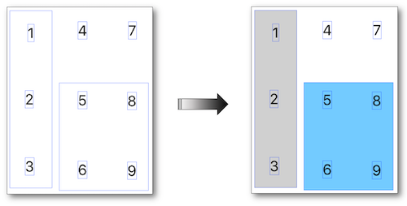
__weak IBOutlet UIView * blueBlock;
__weak IBOutlet UIView * greyColumn;
- (void)viewDidAppear:(BOOL)animated {
[super viewDidAppear:animated];
//Reads the first three numbers in the grey column.
greyColumn.shouldGroupAccessibilityChildren = YES;
//Reads 6, 8, 9 and 5 in this order inside the blue block.
blueBlock.isAccessibilityElement = NO;
blueBlock.accessibilityElements = @[key_6,
key_8,
key_9,
key_5];
}
@IBOutlet weak var greyColumn: UIView!
@IBOutlet weak var blueBlock: UIView!
override func viewDidAppear(_ animated: Bool) {
super.viewDidAppear(animated)
//Reads the first three numbers in the grey column.
greyColumn.shouldGroupAccessibilityChildren = true
//Reads 6, 8, 9 and 5 in this order inside the blue block.
blueBlock.isAccessibilityElement = false
blueBlock.accessibilityElements = [key_6!,
key_8!,
key_9!,
key_5!]
}
Focus an element #
The UIAccessibilityFocus informal protocol provides programming elements to be informed of the accessible element focus.
- accessibilityElementDidBecomeFocused : called when the accessible element is focused.
- accessibilityElementDidLoseFocus : fired when the accessible element lost focus.
- accessibilityElementIsFocused : boolean value indicating the accessible element selection.
Overriden inside a view controller, these elements will be helpless if you think they will be called when an accessible element is focused.
However, if they are implemented in the accessible element itself, you won't be disappointed.
This mistake is due to the informal aspect of the protocol that allows an override of its methods inside an inherited NSObject element even if it's not accessible... like a view controller for instance.
The example below enables to follow the focus of an accessible element identified by its accessibleIdentifier.
#import "UIView+focus.h"
@implementation UIView (focus)
- (void)accessibilityElementDidBecomeFocused {
if ([self accessibilityElementIsFocused]) {
NSLog(@"My element has become focused.");
}
}
- (void)accessibilityElementDidLoseFocus {
if ([self accessibilityElementIsFocused]) {
NSLog(@"My element has lost focus.");
}
}
- (BOOL)accessibilityElementIsFocused {
if ([self.accessibilityIdentifier isEqualToString:@"myAccessibleElt"]) {
return YES;
} else {
return NO;
}
}
@end
extension UIView {
override open func accessibilityElementDidBecomeFocused() {
if self.accessibilityElementIsFocused() {
print("My element has become focused.")
}
}
override open func accessibilityElementDidLoseFocus() {
if self.accessibilityElementIsFocused() {
print("My element has lost focus.")
}
}
override open func accessibilityElementIsFocused() -> Bool {
if (self.accessibilityIdentifier == "myAccessibleElt") {
return true
} else {
return false
}
}
}
Modify the focus area of VoiceOver #
In the case of dynamically modified element or component not inheriting from UIView, it is possible to modify the focus area of accessibility of this element, i.e. the area VoiceOver highlights when focusing an element.
- accessibilityFrame : sets the area via a rectangle (
CGRect).
Usually, for an element inheriting fromUIView, this area is the « visible » part of the view. - accessibilityPath : equivalent to
accessibilityFramebut sets the area via Bezier curves.
- accessibilityActivationPoint : defines a contact point inside the
framewhose action will be fired by a double-tap element activation.
The default value is the midpoint of theframebut it can be redefine anywhere inside.
A classical use case could be an easy activation inside a regroupment of elements for instance.
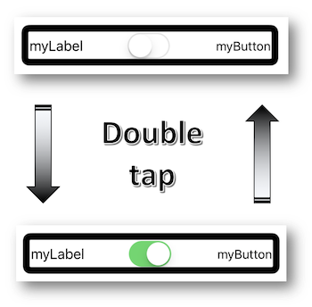
By keeping this default value, one might unwillingly activate the element in the middle of the frame only by activating the created regroupment.
float xVal;
float yVal;
float widthVal;
float heightVal;
-
(void)viewDidAppear:(BOOL)animated {
[super viewDidAppear:animated];
xVal = myLabel.accessibilityFrame.origin.x;
yVal = myLabel.accessibilityFrame.origin.y;
widthVal = myLabel.accessibilityFrame.size.width;
heightVal = myLabel.accessibilityFrame.size.height;
}
//First way to enlarge the focus area.
-
(IBAction)tapHere:(UIButton *)sender {
myLabel.accessibilityFrame = CGRectMake(xVal,
yVal,
widthVal + 100.0,
heightVal+ 100.0);
UIAccessibilityPostNotification(UIAccessibilityLayoutChangedNotification, myLabel);
}
//Second way to enlarge the focus area (Bezier).
-
(IBAction)clic:(UIButton *)sender {
UIBezierPath * bezierPath = [UIBezierPath bezierPath];
[bezierPath moveToPoint:CGPointMake(xVal, yVal)];
[bezierPath addLineToPoint:CGPointMake(xVal + widthVal + 100.0,
yVal)];
[bezierPath addLineToPoint:CGPointMake(xVal + widthVal + 100.0,
yVal + heightVal+ 100.0)];
[bezierPath addLineToPoint:CGPointMake(xVal,
yVal + heightVal+ 100.0)];
[bezierPath closePath];
myLabel.accessibilityPath = bezierPath;
UIAccessibilityPostNotification(UIAccessibilityLayoutChangedNotification, myLabel);
}
var xVal: CGFloat = 0.0
var yVal: CGFloat = 0.0
var widthVal: CGFloat = 0.0
var heightVal: CGFloat = 0.0
override func viewDidAppear(_ animated: Bool) {
super.viewDidAppear(animated)
xVal = myLabel.accessibilityFrame.origin.x;
yVal = myLabel.accessibilityFrame.origin.y;
widthVal = myLabel.accessibilityFrame.size.width;
heightVal = myLabel.accessibilityFrame.size.height;
}
//First way to enlarge the focus area.
@IBAction func clicHere(_ sender: UIButton) {
myLabel.accessibilityFrame = CGRect.init(x: xVal,
y: yVal,
width: widthVal + 100.0,
height: heightVal + 100.0)
UIAccessibility.post(notification: UIAccessibility.Notification.layoutChanged,
argument: myLabel)
}
//Second way to enlarge the focus area (Bezier).
@IBAction func clic(_ sender: UIButton) {
let bezierPath = UIBezierPath.init()
bezierPath.move(to: CGPoint.init(x: xVal, y: yVal))
bezierPath.addLine(to: CGPoint.init(x: xVal + widthVal + 100.0,
y: yVal))
bezierPath.addLine(to: CGPoint.init(x: xVal + widthVal + 100.0,
y: yVal + heightVal + 100.0))
bezierPath.addLine(to: CGPoint.init(x: xVal,
y: yVal + heightVal + 100.0))
bezierPath.close()
myLabel.accessibilityPath = bezierPath
UIAccessibility.post(notification: UIAccessibility.Notification.screenChanged,
argument: myLabel)
}
Modal view #
When a view is presented modally (alert, popup...), the screen reader must only analyze its elements and definitely not those still present in the background.
To reach this goal, you must put the accessibilityViewIsModal property value to true to be sure that VoiceOver only takes care of the appropriate instance elements.
Writing accessibilityViewIsModal = true may not be enough to get the intended read out because of the views hierarchy.
Indeed, only the impacted view siblings aren't taken into account by VoiceOver, all the other ones are.
If the explanations provided in the Examples tab aren't detailed enough, take a look at this David RÖNNQVIST article containing a pedagogical and interactive illustration that explains how the modal view process works ('Implementing accessible modal views' section).
Hereafter, knowledge about hiding wrappers and their contents is assumed to be acquired: if further information is needed, please refer to the Hide elements section to feel comfortable with this notion.
For the examples, let's assume we have a main view containting the following accessible elements :
- A first view (parent A) with 3 subviews (A1, A2, A3).
- A second view (parent B) with a sublevel (B1 et B2) containing subviews (B1.1, B1.2, B2.1, B2.2 et B3.3).

Example 1 : Parent A view as modal.
Because Parent B is a Parent A sibling, accessibilityViewIsModal = true is enough to get the desired result.
Example 2 : A2 view as modal.
A1 and A3 aren't taken into account by VoiceOver because they're A2 siblings BUT Parent B (or possibly its subviews) will be vocalized... and that's definitely not the goal.
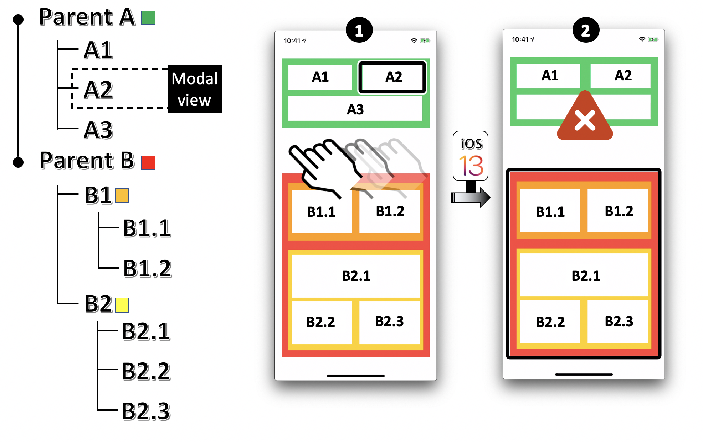
In order to figure out this problem, hiding the undesirable elements when the view is activated as modal is the solution to be applied.
parentA.isAccessibilityElement = NO;
parentA.accessibilityElementsHidden = NO;
A2.accessibilityViewIsModal = YES;
//Resolves the problem with Parent B and its subviews.
parentB.isAccessibilityElement = NO;
parentB.accessibilityElementsHidden = YES;
parentA.isAccessibilityElement = false
parentA.accessibilityElementsHidden = false
A2.accessibilityViewIsModal = true
//Resolves the problem with Parent B and its subviews.
parentB.isAccessibilityElement = false
parentB.accessibilityElementsHidden = true
Example 3 : B1.1 view as modal.
In this case, parent A and B2 (or possibly their subviews) are vocalized with the modal view: only B1.2 isn't read out by VoiceOver because it's B1.1 sibling.
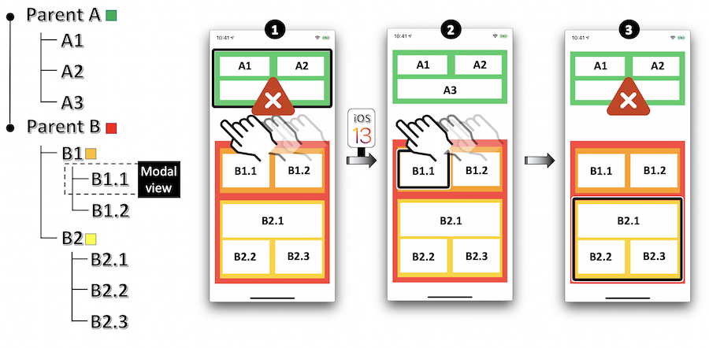
Again, all the undesirable elements must be hidden as soon as the modal view is activated as modal.
parentB.isAccessibilityElement = NO;
parentB.accessibilityElementsHidden = NO;
B1.isAccessibilityElement = NO;
B1.accessibilityElementsHidden = NO;
B11.accessibilityViewIsModal = YES;
//Resolves the problem with Parent A and B2.
parentA.isAccessibilityElement = NO;
parentA.accessibilityElementsHidden = YES;
B2.isAccessibilityElement = NO;
B2.accessibilityElementsHidden = YES;
parentB.isAccessibilityElement = false
parentB.accessibilityElementsHidden = false
B1.isAccessibilityElement = false
B1.accessibilityElementsHidden = false
B11.accessibilityViewIsModal = true
//Resolves the problem with Parent A and B2.
parentA.isAccessibilityElement = false
parentA.accessibilityElementsHidden = true
B2.isAccessibilityElement = false
B2.accessibilityElementsHidden = true
Text size #
Since iOS7, it is possible to make the text size dynamic according to the phone settings.
The following steps should be respected in order to easily use this API :
- Use the text styles available with the application iOS version.
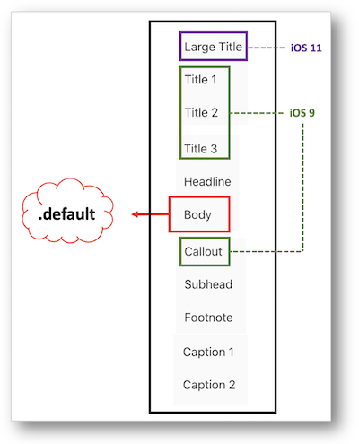 - Choose the system font to facilitate your programing even if the use of other fonts is well assisted by the
UIFontMetricsnew class (iOS11).
__weak IBOutlet UILabel * fontHeadline;
__weak IBOutlet UILabel * fontFootNote;
//Use of the default native font.
fontFootNote.font = [UIFont preferredFontForTextStyle:UIFontTextStyleHeadline];
//Customed font definition for a header.
UIFont * fontHead = [UIFont fontWithName:@"Chalkduster" size:30.0];
UIFontMetrics * fontHeadMetrics = [[UIFontMetrics alloc]initForTextStyle:UIFontTextStyleHeadline];
fontHeadline.font = [fontHeadMetrics scaledFontForFont:fontHead];
@IBOutlet weak var fontHeadline: UILabel!
@IBOutlet weak var fontFootNote: UILabel!
//Use of the default native font for a header.
fontFootNote.font = .preferredFont(forTextStyle: .headline)
//Customed font definition for a header.
let fontHead = UIFont(name: "Chalkduster", size: 30.0)
let fontHeadMetrics = UIFontMetrics(forTextStyle: .headline)
fontHeadline.font = fontHeadMetrics.scaledFont(for: fontHead!)
- Listen to the font size settings change event UIContentSizeCategoryDidChange or directly use the property adjustsFontForContentSizeCategory to have an automatic update of your system font size if you're programming in iOS10 (this attribute applies to custom fonts only with the
UIFontMetricsclass).
Note that the traitCollectionDidChange method that belongs to theUITraitEnvironmentinformal protocol may also be used in this context because it will be called as soon as the iOS interface environment changes (class/content size, portrait/landscape, color contrast).
//Listens to the notification dealing with the font size changing from the mobile settings.
[[NSNotificationCenter defaultCenter] addObserver:self
selector:@selector(methodToBeCalled:)
name:UIContentSizeCategoryDidChangeNotification
object:nil];
//Automatic changing of the font size without listening to the previous notification.
fontHeadline.adjustsFontForContentSizeCategory = YES;
- (void)methodToBeCalled:(NSNotification *)notification {
//When handling the font size change event, you must redisplay the affected elements.
fontFootNote.font = [UIFont preferredFontForTextStyle:UIFontTextStyleFootnote];
}
//Listens to the notification dealing with the font size changing from the mobile settings.
NotificationCenter.default.addObserver(self,
selector:#selector(methodToBeCalled(notification:)),
name: UIContentSizeCategory.didChangeNotification,
object: nil)
//Automatic changing of the font size without listening to the previous notification.
fontHeadline.adjustsFontForContentSizeCategory = true
@objc func methodToBeCalled(notification: Notification) {
//When handling the font size change event, you must redisplay the affected elements.
fontFootNote.font = UIFont.preferredFont(forTextStyle: .footnote)
}
- Be careful that the containers fit their contents: using constraints is the best way to perform this task using dynamic values. Don't forget to include the settings for the navigation/tab/status bar and toolbar items that will be handled by the Large Content Viewer.
- Don't forget to adapt the color contrast to the text size.
Truncation hyphen #
The Dynamic Type feature introduced in the previous section may come along with a word truncation according to the magnifying that is defined in the settings.
Unfortunately, the iOS system doesn't handle natively this point that can be implemented only by programing to get an appreciated visual depiction.
The rationale behind is the use of a `NSMutableAttributedString` with a `NSMutableParagraphStyle` type property as exposed hereunder:
@interface TruncationHyphen () {
__weak IBOutlet UILabel * myLabel;
}
@end
@implementation TruncationHyphen
- (void)viewDidLoad {
[super viewDidLoad];
NSString * myString = @"floccinaucinihilipilification";
NSMutableParagraphStyle * paraph = [[NSMutableParagraphStyle alloc] init];
paraph.alignment = NSTextAlignmentJustified;
paraph.hyphenationFactor = 1.0;
UIFont * myFont = [UIFont fontWithName:@"HoeflerText-Black" size:18.0];
UIFont * myTextFont = [[UIFontMetrics metricsForTextStyle:UIFontTextStyleTitle1] scaledFontForFont:myFont];
NSDictionary * attributesDictionary = @{NSFontAttributeName:myTextFont};
NSMutableAttributedString * myText = [[NSMutableAttributedString alloc]initWithString:myString
attributes:attributesDictionary];
[myText addAttribute:NSParagraphStyleAttributeName
value:paraph
range:NSMakeRange(0, 1)];
myLabel.attributedText = myText;
}
@end
class TruncationHyphen: UIViewController {
@IBOutlet weak var myLabel: UILabel!
override func viewDidLoad() {
super.viewDidLoad()
let myString = "floccinaucinihilipilification"
let paraph = NSMutableParagraphStyle()
paraph.alignment = .justified
paraph.hyphenationFactor = 1.0
let myTextFont = UIFontMetrics(forTextStyle: .title1).scaledFont(for:UIFont(name:"HoeflerText-Black", size:18)!)
let myText = NSMutableAttributedString(string:myString,
attributes: [.font: myTextFont])
myText.addAttribute(.paragraphStyle,
value: paraph,
range: NSMakeRange(0,1))
myLabel.attributedText = myText
}
}
Graphical elements size #
Exactly like text, images and tab/tool bar items have a scalable size thanks to accessibility settings but only since iOS11 with Xcode 9.
To illustrate these new features, the example below is obtained by following the steps hereafter:
1. Under Xcode, import the image to be enlarged with a pdf extension and a x1 resolution in the xcassets catalog.
2. In the new Image Set, tick Preserve Vector Data and specify Single Scale as Scales attribute :
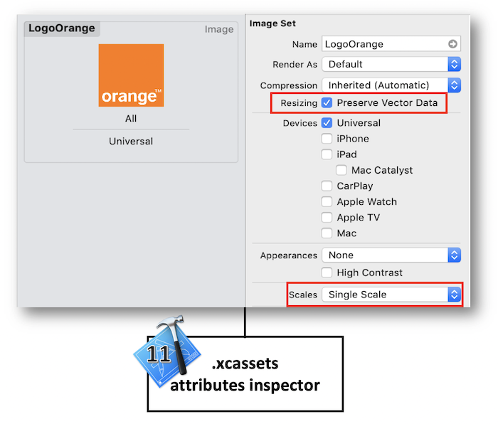
3. If a storyboard is used for this image, tick Adjusts Image Size in the Image View section, otherwise put the adjustsImageSizeForAccessibilityContentSizeCategory image property to true in code :
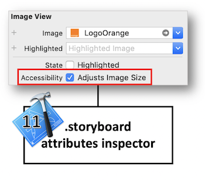
4. If a tab bar or a tool bar is used in the application, first repeat the previous 3 steps for each image included in the items to be enlarged in the middle of the screen and then link the image to its appropriate item :
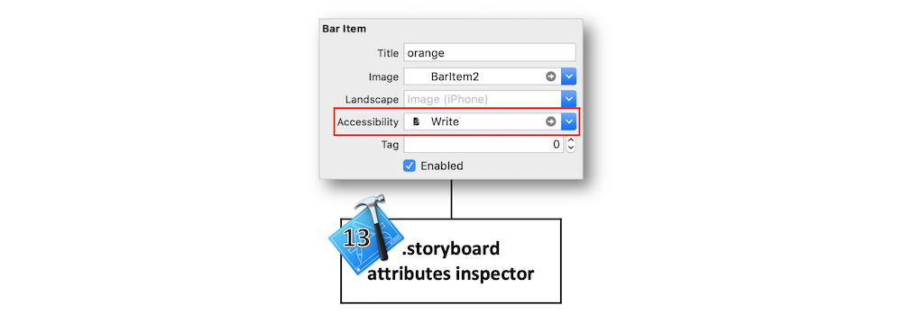
WARNING : don't forget to check out your layout with these new images larger sizes.
An application with a tab bar, whose second bar item displays the Orange logo (added Aspect Fit content mode and constraints to stretch the image view), is created to test the features exposed in the description.
With the Larger Accessibility Sizes activation in the settings (see the previous section), one can easily note in the application :
- A larger Orange image size.
- A larger version of the bar item in an overlay if you touch and hold over it ⟹ Large Content Viewer feature available since iOS 11.
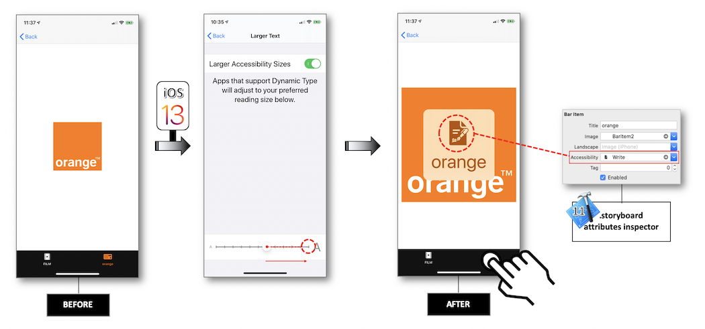
Large Content Viewer #
This feature introduced in iOS 11 allows people with low vision to use UIKit bar elements as effective as the Dynamic Type grows the text size.
To trigger this Large Content Viewer (see Graphical elements size), the user must long press the element to see a larger version in the middle of the screen.
When implementing the Dynamic Type feature, iOS 13 allows to show the same UI that's shown for standard UIKit bar items for every element that conforms to the UILargeContentViewerItem protocol.

The following points are important to be noticed before implementing the Large Content Viewer feature :
- It's important to notice that 'scaling with Dynamic Type is always preferred to showing the Large Content Viewer' that must be implemented 'only for the case when your custom UI cannot grow in size' ⟹ Apple recommendation.
- This feature is available only for the the accessibility text sizes.
If an element magnification may lower the user experience, the Large Content Viewer can be implemented on that particular view to get the Head's Up Display in the middle of the screen :
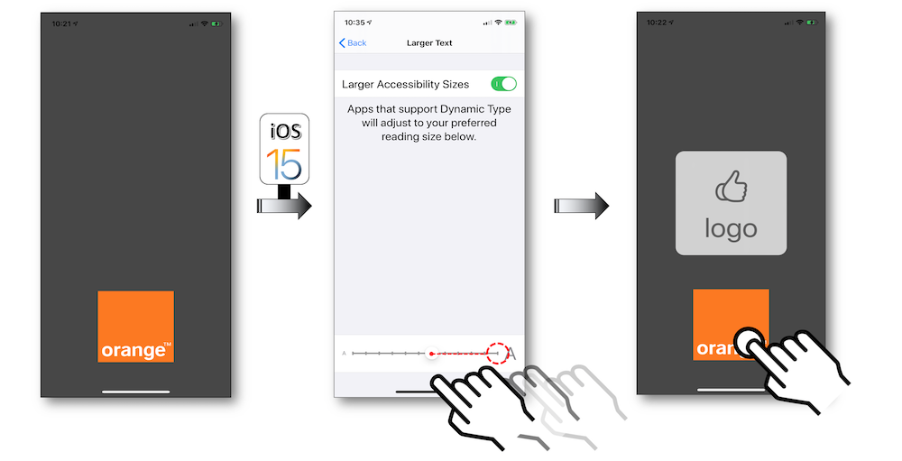
@interface LogoViewController ()
@property (weak, nonatomic) IBOutlet UIImageView * myView;
@end
NS_ASSUME_NONNULL_BEGIN
@implementation LogoViewController
- (void)viewDidLoad {
[super viewDidLoad];
_myView.showsLargeContentViewer = YES;
_myView.largeContentTitle = @"logo";
_myView.largeContentImage = [UIImage systemImageNamed:@"hand.thumbsup"];
[_myView addInteraction:[[UILargeContentViewerInteraction alloc] init]];
}
@end
NS_ASSUME_NONNULL_END
class LogoViewController: UIViewController {
@IBOutlet weak var myView: UIImageView!
override func viewDidAppear(_ animated: Bool) {
super.viewDidAppear(animated)
myView.isUserInteractionEnabled = true
myView.showsLargeContentViewer = true
myView.largeContentTitle = "logo"
myView.largeContentImage = UIImage(systemName: "hand.thumbsup")
myView.addInteraction(UILargeContentViewerInteraction())
}
}
In the same way, on a clickable element like a button whose magnification may become problematic, it's quite possible to use this feature to display its content and to ensure to trigger its actions when the finger is up :
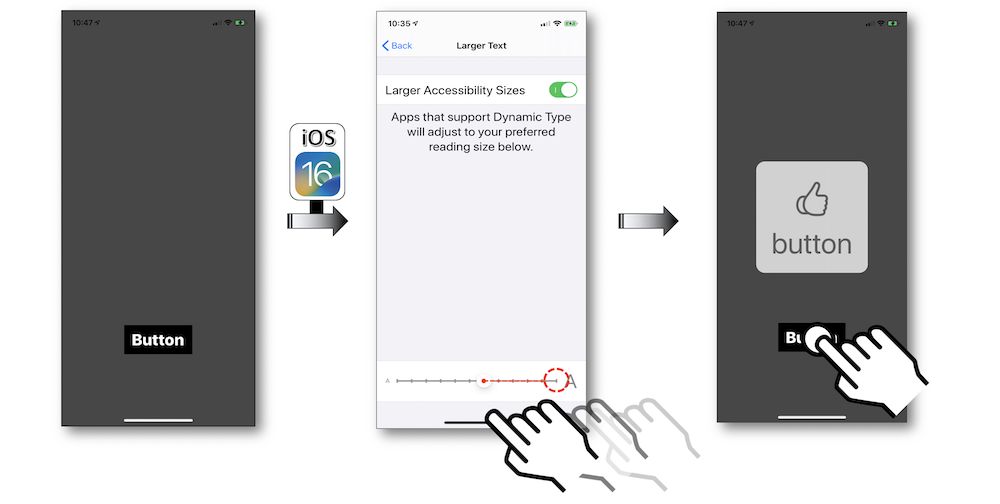
@interface ButtonViewController ()
@property (weak, nonatomic) IBOutlet UIButton * myButton;
@end
NS_ASSUME_NONNULL_BEGIN
@implementation ButtonViewController
- (void)viewDidLoad {
[super viewDidLoad];
_myButton.showsLargeContentViewer = YES;
_myButton.largeContentTitle = @"button";
_myButton.largeContentImage = @"hand.thumbsup";
[_myButton addInteraction:[[UILargeContentViewerInteraction alloc] init]];
}
- (IBAction)tapButton:(UIButton *)sender {
//Appropriate actions when the button is tapped.
}
@end
NS_ASSUME_NONNULL_END
class ButtonViewController: UIViewController {
@IBOutlet weak var myButton: UIButton!
override func viewDidAppear(_ animated: Bool) {
super.viewDidAppear(animated)
myButton.showsLargeContentViewer = true
myButton.largeContentTitle = "button"
myButton.largeContentImage = UIImage(systemName: "hand.thumbsup")
myButton.addInteraction(UILargeContentViewerInteraction())
}
@IBAction func tapButton(_ sender: UIButton) {
//Appropriate actions when the button is tapped.
}
}
When the long press gesture is already implemented on the graphical element, it may be interesting to use the gestureRecognizer(_:shouldRecognizeSimultaneouslyWith:) method that will be helpful to set up the two gestures simutaneously.
Continuous adjustable values #
Graphics like picker, stepper or slider have the ability to continuously change the value they provide.
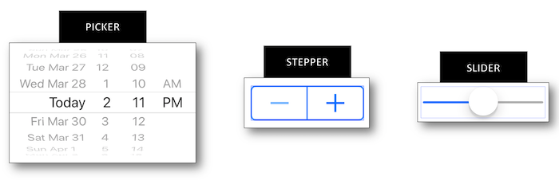
It's hard to render what's happening when the changing isn't graphically or vocally notified.
The following methodology to resolve this problem for blind people using VoiceOver may be the same for these three graphics, that's why only the stepper will be handled.
Creating a stepper with a label to display its value provides the following rendering :
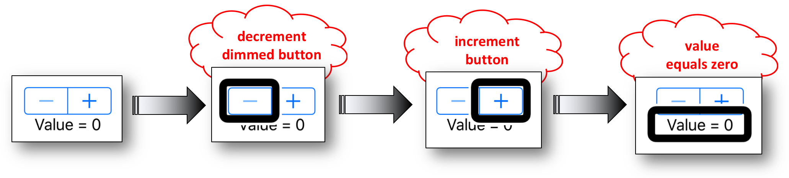
The focus must change to :
- Get each element that increases or decreases the value.
- Know the value provided by the
label.
Moreover, there is no real time notification dealing with the value changing.
Nothing is definitely blocking in use but these latest remarks lead to a new design for this example that used to be so simple.
The rationale behind is to be able to change the stepper value, to be informed of this modification and to know the new value thanks to a single and unique object.
Group the stepperand the label (a StackView should do the job) then put UIAccessibilityTraitAdjustable as a new trait for this new accessible group.
This trait is MANDATORY linked to the accessibilityIncrement() and accessibilityDecrement() methods that must be implemented to define the continous way of changing the value.
As a result, all the previous constraints are removed and a hint is natively provided by this trait to mention the proper way of using this object.
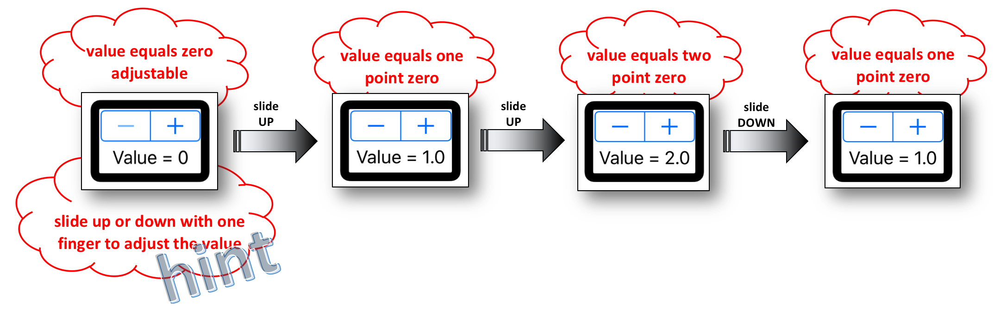
- To get this result, the container class {
stepper+label} is first created to allow the delegation for the future value changing.
-===== StepperWrapper.h =====-
NS_ASSUME_NONNULL_BEGIN
@class StepperWrapper;
@protocol AdjustableForAccessibilityDelegate <NSObject>
- (void)adjustableDecrementForView:(StepperWrapper *)view;
- (void)adjustableIncrementForView:(StepperWrapper *)view;
@end
@interface StepperWrapper : UIStackView
@property(nonatomic,weak) id <AdjustableForAccessibilityDelegate> delegate;
@end
NS_ASSUME_NONNULL_END
-===== StepperWrapper.m =====-
NS_ASSUME_NONNULL_BEGIN
@implementation StepperWrapper
- (instancetype)initWithCoder:(NSCoder *)coder {
self = [super initWithCoder:coder];
self.isAccessibilityElement = YES;
self.accessibilityTraits = UIAccessibilityTraitAdjustable;
return self;
}
- (void)accessibilityDecrement {
if ([_delegate respondsToSelector:@selector(adjustableDecrementForView:)]) {
[_delegate adjustableDecrementForView:self];
}
}
- (void)accessibilityIncrement {
if ([_delegate respondsToSelector:@selector(adjustableIncrementForView:)]) {
[_delegate adjustableIncrementForView:self];
}
}
protocol AdjustableForAccessibilityDelegate: class {
func adjustableDecrementFor(_ view: StepperWrapper)
func adjustableIncrementFor(_ view: StepperWrapper)
}
class StepperWrapper: UIStackView {
weak var delegate: AdjustableForAccessibilityDelegate?
override init(frame: CGRect) {
super.init(frame: frame)
}
required init(coder: NSCoder) {
super.init(coder: coder)
isAccessibilityElement = true
accessibilityTraits = .adjustable
}
override func accessibilityDecrement() {
delegate?.adjustableDecrementFor(self)
}
override func accessibilityIncrement() {
delegate?.adjustableIncrementFor(self)
}
}
- Next, the two methods of the implemented protocol must be defined before updating and vocally presenting the new value in the ViewController.
NS_ASSUME_NONNULL_BEGIN
@interface ContinuousAdjustableValues () <AdjustableForAccessibilityDelegate>
@property (weak, nonatomic) IBOutlet StepperWrapper * stepperStackViewAccess;
@property (weak, nonatomic) IBOutlet UIStepper * stepperAccess;
@property (weak, nonatomic) IBOutlet UILabel * stepperValueAccess;
@end
@implementation ContinuousAdjustableValues
- (void)viewWillAppear:(BOOL)animated {
[super viewWillAppear:animated];
_stepperStackViewAccess.delegate = self;
_stepperStackViewAccess.accessibilityLabel = @"increase or decrease the value";
_stepperStackViewAccess.accessibilityValue = _stepperValueAccess.text;
}
- (void)adjustableDecrementForView:(StepperWrapper *)view {
_stepperAccess.value -= _stepperAccess.stepValue;
[self updateStepperValue];
}
- (void)adjustableIncrementForView:(StepperWrapper *)view {
_stepperAccess.value += _stepperAccess.stepValue;
[self updateStepperValue];
}
- (void) updateStepperValue {
_stepperValueAccess.text = [NSString stringWithFormat:@"Value = %0.1f",_stepperAccess.value];
_stepperStackViewAccess.accessibilityValue = _stepperValueAccess.text;
}
@end
NS_ASSUME_NONNULL_END
class ContinuousAdjustableValues: UIViewController, AdjustableForAccessibilityDelegate {
@IBOutlet weak var stepperStackViewAccess: StepperWrapper!
@IBOutlet weak var stepperAccess: UIStepper!
@IBOutlet weak var stepperValueAccess: UILabel!
override func viewDidLoad() {
super.viewDidLoad()
stepperStackViewAccess.delegate = self
stepperStackViewAccess.accessibilityLabel = "increase or decrease the value"
stepperStackViewAccess.accessibilityValue = stepperValueAccess.text
}
func adjustableDecrementFor(_ view: StepperWrapper) {
stepperAccess.value -= stepperAccess.stepValue
updateStepperValue()
}
func adjustableIncrementFor(_ view: StepperWrapper) {
stepperAccess.value += stepperAccess.stepValue
updateStepperValue()
}
private func updateStepperValue() {
stepperValueAccess.text = "Value = \(stepperAccess.value)"
stepperStackViewAccess.accessibilityValue = stepperValueAccess.text
}
}
Custom actions #
Some basic gestures may become a real headache to be perfectly understood by VoiceOver in a fluent way for the user.
A convincing example is the iOS native mail that may suggest some actions as follows:
This gesture cannot lead to the proper result with VoiceOver because a flick left will give rise to the selection of the next accessible element instead of suggesting actions as above.
In this case, it would have been relevant to follow the pattern described in the `Example` sheet to get these actions if they weren't natively implemented.
All the available actions are present at the first screen so as to ease the user experience by reaching his goal as quick as possible.
It's highly recommended to follow the pattern described in the `Example` sheet to get this purpose for a custom component.
Whatever the VoiceOver or the Switch Control feature, the implementation to get the desired actions on a custom element is exactly the same: VoiceOver is the option to illustrate the following example.
A solution may consist of associating the selected element with an array of actions that will be automatically introduced to the user.
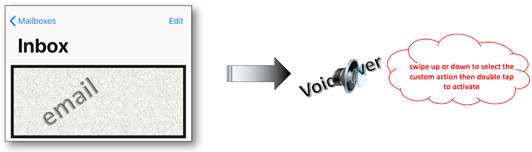
@interface CustomActions ()
@property (weak, nonatomic) IBOutlet UILabel * persoElt;
@end
@implementation CustomActions
- (void)viewDidLoad {
[super viewDidLoad];
UIAccessibilityCustomAction * a11yMoreAction = [[UIAccessibilityCustomAction alloc]initWithName:@"more"
target:self
selector:@selector(moreAction)];
UIAccessibilityCustomAction * a11yFlagAction = [[UIAccessibilityCustomAction alloc]initWithName:@"flag"
target:self
selector:@selector(flagAction)];
UIAccessibilityCustomAction * a11yDeleteAction = [[UIAccessibilityCustomAction alloc]initWithName:@"delete"
target:self
selector:@selector(deleteAction)];
_persoElt.accessibilityCustomActions = @[a11yMoreAction,
a11yFlagAction,
a11yDeleteAction];
}
- (BOOL)moreAction {
//Code to be implemented for the appropriate action.
return YES;
}
- (BOOL)flagAction {
//Code to be implemented for the appropriate action.
return YES;
}
- (BOOL)deleteAction {
//Code to be implemented for the appropriate action.
return YES;
}
@end
class CustomActions: UIViewController {
@IBOutlet weak var persoElt: UILabel!
override func viewDidLoad() {
super.viewDidLoad()
let a11yMoreAction = UIAccessibilityCustomAction(name: "more",
target: self,
selector: #selector(moreAction))
let a11yFlagAction = UIAccessibilityCustomAction(name: "flag",
target: self,
selector: #selector(flagAction))
// iOS 13 new syntax with a closure.
let a11yDeleteAction = UIAccessibilityCustomAction(name: "delete",
actionHandler: { (customAction: UIAccessibilityCustomAction) -> Bool in
//Code to be implemented for the appropriate action.
return true
})
persoElt.accessibilityCustomActions = [a11yMoreAction,
a11yFlagAction,
a11yDeleteAction]
}
@objc func moreAction() -> Bool {
//Code to be implemented for the appropriate action.
return true
}
@objc func flagAction() -> Bool {
//Code to be implemented for the appropriate action.
return true
}
}
The code above gives rise to the following result thanks to consecutive flicks on the selected accessible element :
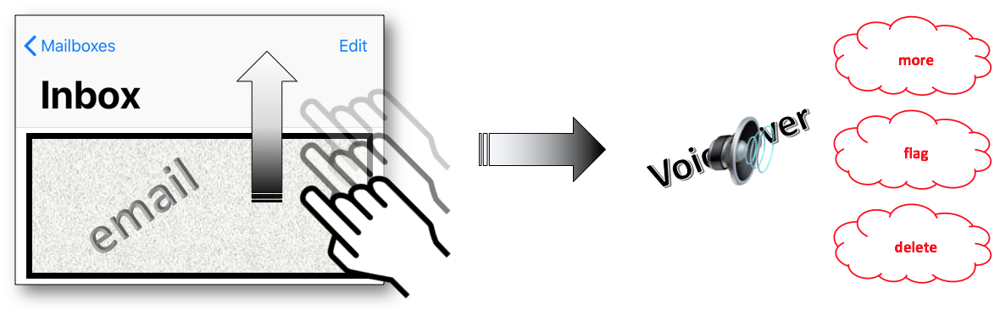
To get a visual information about this topic, take a look at the Accessibility Custom Actions video whose detailed summary is available at the WWDC section of this site.
Custom rotor #
Since iOS10, adding a new rotor option is possible thanks to the UIAccessibilityCustomRotor whose creation is based on 2 elements :
- UIAccessibilityCustomRotorSearchPredicate : defines the logic according to the flick type on the screen.
- UIAccessibilityCustomRotorItemResult : ensued element from the logic above.
To illustrate the programing side of this feature, the code snippet below counts and displays all the flicks up and down.
@interface CustomRotor ()
@property (weak, nonatomic) IBOutlet UILabel * rotorTitle;
@property (weak, nonatomic) IBOutlet UILabel * upLabel;
@property (weak, nonatomic) IBOutlet UILabel * downLabel;
@end
@implementation CustomRotor
static NSInteger flicksUp;
static NSInteger flicksDown;
+ (void)initialize {
flicksUp = 0;
flicksDown = 0;
}
- (void)viewDidLoad {
[super viewDidLoad];
UIAccessibilityCustomRotor * rotor = [self buildMyRotor:@"Rotor info"];
self.accessibilityCustomRotors = @[rotor];
}
- (UIAccessibilityCustomRotor *)buildMyRotor:(NSString * _Nonnull)name{
return [[UIAccessibilityCustomRotor alloc]initWithName:name
itemSearchBlock:^UIAccessibilityCustomRotorItemResult * _Nullable(UIAccessibilityCustomRotorSearchPredicate * _Nonnull predicate) {
if (predicate.searchDirection == UIAccessibilityCustomRotorDirectionNext) {
flicksDown += 1;
self.downLabel.text = [NSString stringWithFormat:@"%ld",(long)flicksDown];
} else {
flicksUp += 1;
self.upLabel.text = [NSString stringWithFormat:@"%ld",(long)flicksUp];
}
return [[UIAccessibilityCustomRotorItemResult alloc] initWithTargetElement:self.rotorTitle
targetRange:nil];
}];
}
@end
class CustomRotor: UIViewController {
@IBOutlet weak var rotorTitle: UILabel!
static var flicksUp = 0
@IBOutlet weak var upLabel: UILabel!
static var flicksDown = 0
@IBOutlet weak var downLabel: UILabel!
override func viewDidLoad() {
super.viewDidLoad()
let rotor = buildMyRotor("Rotor info")
self.accessibilityCustomRotors = [rotor]
}
func buildMyRotor(_ name: String) -> UIAccessibilityCustomRotor {
return UIAccessibilityCustomRotor.init(name: name,
itemSearch: { predicate -> UIAccessibilityCustomRotorItemResult? in
if (predicate.searchDirection == UIAccessibilityCustomRotor.Direction.next) {
CustomRotor.flicksDown += 1
self.downLabel.text = String(CustomRotor.flicksDown)
} else {
CustomRotor.flicksUp += 1
self.upLabel.text = String(CustomRotor.flicksUp)
}
return UIAccessibilityCustomRotorItemResult.init(targetElement:self.rotorTitle,
targetRange: nil)
})
}
}
The code above gives rise to the following illustrated steps :
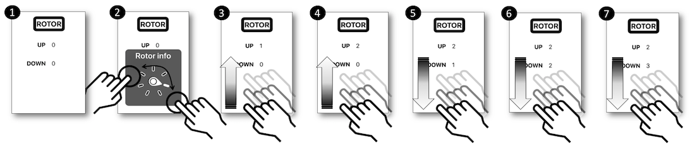
The use of a custom rotor is definitely not a natural part of a mobile application, that's why its functioning and purpose must be fully explained to assist the user experience.
The main difference between a rotor option and a custom action or an adjustable element relies on the fact that it can be activated whatever the selected element.
However, if the selected element is adjustable or holds any custom actions, its actions will prevail over those of the rotor.
Such a feature must be implemented with caution and according to specific needs whose only purpose should be to improve and facilitate the user experience.
Accessibility options #
On iOS, it is possible to check the accessibility options state.
Is VoiceOver activated? Is the audio-mono mode activated? Several methods that are part of the UIKit framework can help you to check with that.
The most useful method is UIAccessibilityIsVoiceOverRunning which allows to know whether VoiceOver is activated.
Some other methods are deeply explained in a WWDC video (Deliver an exceptional accessibility experience) whose content is perfectly detailed in the iOS WWDC section of this site.
BOOL isVoiveOverRunning = (UIAccessibilityIsVoiceOverRunning() ? 1 : 0);
BOOL isSwitchControlRunning = (UIAccessibilityIsSwitchControlRunning() ? 1 : 0);
NSLog(@"VoiceOver is %d and SwitchControl is %d.", isVoiveOverRunning, isSwitchControlRunning);
let isVoiceOverRunning = (UIAccessibility.isVoiceOverRunning ? 1 : 0)
let isSwitchControlRunning = (UIAccessibility.isSwitchControlRunning ? 1 : 0)
print("VoiceOver is \(isVoiceOverRunning) and SwichControl is \(isSwitchControlRunning).")
iOS sends many accessibility events when accessibility options have changed.
For example, if VoiceOver is deactivated, the running applications will receive the UIAccessibilityVoiceOverStatusDidChangeNotification event.
This is very useful when used simultaneously with UIAccessibilityIsVoiceOverRunning.
Let's say the application behaves differently when VoiceOver is turned on.
What happens if VoiceOver is disabled ? This is exactly the use case when the system events can be used.
By listening to these events, it is possible to dynamically change how the application behaves.
In this example, a method is fired when VoiceOver or Switch Control status has changed.
- (void)viewDidAppear:(BOOL)animated {
[super viewDidAppear:animated];
[[NSNotificationCenter defaultCenter] addObserver:self
selector:@selector(methodToBeCalled:)
name:UIAccessibilitySwitchControlStatusDidChangeNotification
object:nil];
[[NSNotificationCenter defaultCenter] addObserver:self
selector:@selector(methodToBeCalled:)
name:UIAccessibilityVoiceOverStatusDidChangeNotification
object:nil];
}
- (void)methodToBeCalled:(NSNotification *)notification {
NSArray * checkStatus = @[@"NOK", @"OK"];
NSLog(@"SWITCH CONTROL is %@ and VOICE OVER is %@",
checkStatus[UIAccessibilityIsSwitchControlRunning()],
checkStatus[UIAccessibilityIsVoiceOverRunning()]);
}
override func viewDidAppear(_ animated: Bool) {
super.viewDidAppear(animated)
NotificationCenter.default.addObserver(self,
selector: #selector(methodToBeCalled(notification:)),
name: UIAccessibility.switchControlStatusDidChangeNotification,
object: nil)
NotificationCenter.default.addObserver(self,
selector: #selector(methodToBeCalled(notification:)),
name: UIAccessibility.voiceOverStatusDidChangeNotification,
object: nil)
}
@objc private func methodToBeCalled(notification: Notification) {
let switchControlStatus = (UIAccessibility.isSwitchControlRunning ? "OK" : "NOK")
let voiceOverStatus = (UIAccessibility.isVoiceOverRunning ? "OK" : "NOK")
print("SWITCH CONTROL is \(switchControlStatus) and VOICE OVER is \(voiceOverStatus).")
}

- Accessibility options (iOS conception)
Navigation bar #
Speech synthesis #
Many use cases are good candidates to use the speech synthesis and they aren't necessary all part of accessibility.
However, in that perspective, it's important to note that this feature doesn't replace VoiceOver but could be a good complement to the screen reader implementation (the speech overlaps the screen reader voice).
Few elements are mandatory to create a speech synthesis on the fly:
- **The text**: `AVSpeechUtterance` instance with a `voice` property that's `AVSpeechSynthesisVoice` typed.
- **The synthesizer**: `AVSpeechSynthesizer` instance that handles the incoming text with an events control thanks to the `AVSpeechSynthesizerDelegate` protocol.
To be sure that a bunch of AVSpeechUtterance instances is entirely vocalized, it's essential to retain the AVSpeechSynthesizer instance until the speech is done.
The following example will define the speech rate and the voice pitch/volume for each utterance while:
- Highlighting the vocalized word thanks to the `AVSpeechSynthesizerDelegate` protocol.
- Pausing and resuming from where the speech stopped thanks to some `AVSpeechSynthesizer` instance methods.
@interface SpeechSynthesis() {
NSMutableArray * playerQueue;
AVSpeechSynthesizer * synthesizer;
__weak IBOutlet UILabel * textLabel;
}
@end
NS_ASSUME_NONNULL_BEGIN
@implementation SpeechSynthesis
- (void)viewDidLoad {
[super viewDidLoad];
playerQueue = [[NSMutableArray alloc] init];
synthesizer = [[AVSpeechSynthesizer alloc] init];
}
- (void)viewDidAppear:(BOOL)animated {
[super viewDidAppear:animated];
for (int i = 1 ; i < 11 ; i++) {
NSString * stringNbPrefix = @"Sentence number ";
NSString * stringNbSuffix = @" of the speech synthesizer.";
NSString * stringNb = [NSString stringWithFormat:@"%@%i%@", stringNbPrefix, i, stringNbSuffix];
AVSpeechUtterance * utterance = [[AVSpeechUtterance alloc] initWithString:stringNb];
utterance.rate = AVSpeechUtteranceDefaultSpeechRate;
utterance.pitchMultiplier = 1.0;
utterance.volume = 1.0;
[playerQueue addObject:utterance];
}
synthesizer.delegate = self;
for (AVSpeechUtterance * utterance in playerQueue) {
[synthesizer speakUtterance:utterance];
}
}
//AVSpeechSynthesizerDelegate protocol method to highlight the vocalized word.
- (void)speechSynthesizer:(AVSpeechSynthesizer *)synthesizer
willSpeakRangeOfSpeechString:(NSRange)characterRange
utterance:(AVSpeechUtterance *)utterance {
NSMutableAttributedString * attributedString = [[NSMutableAttributedString alloc] initWithString:utterance.speechString];
[attributedString addAttribute:NSFontAttributeName
value:[UIFont systemFontOfSize:19.0]
range:characterRange];
NSAttributedString * subString = [attributedString attributedSubstringFromRange:characterRange];
textLabel.attributedText = attributedString;
NSString * output = [NSString stringWithFormat:@"%@%@", @"word : ", subString.string];
NSLog(@"%@", output);
}
- (IBAction)pauseButton:(UIButton *)sender {
if (synthesizer.isSpeaking == TRUE) {
if ([synthesizer pauseSpeakingAtBoundary:AVSpeechBoundaryImmediate] == TRUE) {
NSLog(@"PAUSE");
} else {
NSLog(@"P.R.O.B.L.E.M. when pausing.");
}
}
}
- (IBAction)resumeButton:(UIButton *)sender {
if (synthesizer.isPaused == TRUE) {
if ([synthesizer continueSpeaking] == TRUE) {
NSLog(@"RESUME");
} else {
NSLog(@"P.R.O.B.L.E.M. when resuming.");
}
}
}
@end
class SpeechSynthesis: UIViewController, AVSpeechSynthesizerDelegate {
@IBOutlet weak var textLabel: UILabel!
var synthesizer = AVSpeechSynthesizer()
var playQueue = [AVSpeechUtterance]()
override func viewDidAppear(_ animated: Bool) {
super.viewDidAppear(animated)
for i in 1...10 {
let stringNb = "Sentence number " + String(i) + " of the speech synthesizer."
let utterance = AVSpeechUtterance(string: stringNb)
utterance.rate = AVSpeechUtteranceDefaultSpeechRate
utterance.pitchMultiplier = 1.0
utterance.volume = 1.0
playQueue.append(utterance)
}
synthesizer.delegate = self
for utterance in playQueue {
synthesizer.speak(utterance)
}
}
//AVSpeechSynthesizerDelegate protocol method to highlight the vocalized word.
func speechSynthesizer(_ synthesizer: AVSpeechSynthesizer,
willSpeakRangeOfSpeechString characterRange: NSRange,
utterance: AVSpeechUtterance) {
let attributedString = NSMutableAttributedString(string: utterance.speechString)
attributedString.addAttribute(.font,
value: UIFont.boldSystemFont(ofSize: 19),
range: characterRange)
textLabel.attributedText = attributedString
let subString = attributedString.attributedSubstring(from: characterRange)
print("word : \(subString.string)")
}
@IBAction func pauseAction(_ sender: UIButton) {
if (synthesizer.isSpeaking == true) {
if (synthesizer.pauseSpeaking(at: .immediate) == true) {
print("PAUSE")
} else {
print("P.R.O.B.L.E.M. when pausing.")
}
}
}
@IBAction func resumeAction(_ sender: UIButton) {
if (synthesizer.isPaused == true) {
if (synthesizer.continueSpeaking() == true) {
print("RESUME")
} else {
print("P.R.O.B.L.E.M. when resuming.")
}
}
}
}
When a particular spelling is intended, phonetics is highly recommended to get the desired purpose.
NSMutableAttributedString * attrStr = [[NSMutableAttributedString alloc] initWithString:@"blablabla"
attributes:@{AVSpeechSynthesisIPANotationAttribute:@"ˈma͡ɪ.ˈa͡ɪ.ˈfʌ.ˈniz.ˈgɻe͡ɪt"}];
AVSpeechUtterance * utterance = [[AVSpeechUtterance alloc] initWithAttributedString:attrStr];
AVSpeechSynthesizer * synthesizer = [[AVSpeechSynthesizer alloc] init];
[synthesizer speakUtterance:utterance];
let pronunciationKey = NSAttributedString.Key(rawValue: AVSpeechSynthesisIPANotationAttribute)
let attrStr = NSMutableAttributedString(string: "blablabla",
attributes: [pronunciationKey: "ˈma͡ɪ.ˈa͡ɪ.ˈfʌ.ˈniz.ˈgɻe͡ɪt"])
let utterance = AVSpeechUtterance(attributedString: attrStr)
let synthesizer = AVSpeechSynthesizer()
synthesizer.speak(utterance)
Generating phonetics may be done in the device settings.
Once the menu Pronunciations is reached...
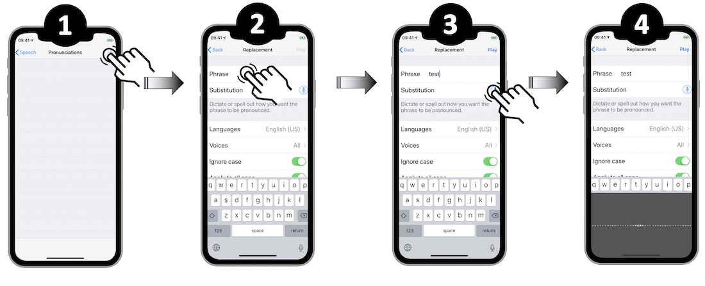
- Select the '**+**' icon to add a new phonetic element.
- Name this new element in order to quickly find it later on.
- Tap the **microphone** icon.
- Vocalize an entire sentence or a single word.
- Listen to the different system proposals.
- Validate your choice with the '**OK**' button or cancel to start over.
- Tap the back button to confirm the new created phonetic element.
- Find all the generated elements in the `Pronunciations` page.
To get the phonetic expression inside the code, pass it through the mobile `Notes` application to be synchronized with the iCloud one from which a copy-paste becomes easy as a pie.
- [AVSpeechSynthesisVoice](https://developer.apple.com/documentation/avfoundation/avspeechsynthesisvoice)
- [AVSpeechSynthesizer](https://developer.apple.com/documentation/avfoundation/avspeechsynthesizer)
- [AVSpeechSynthesizerDelegate](https://developer.apple.com/documentation/avfoundation/avspeechsynthesizerdelegate)
- [AVSpeechUtterance](https://developer.apple.com/documentation/avfoundation/avspeechutterance)
- [WWDC 2018 : Making iOS talk with AVSpeechSynthesizer](../wwdc/2018/236)
All the speech synthesizer functionalities are introduced in a WWDC video (Making iOS talk with AVSpeechSynthesizer) that's perfectly summarized in the WWDC section of this site.
Switch Control #
The accessibility Switch Control feature revolves around the point mode and the item mode.
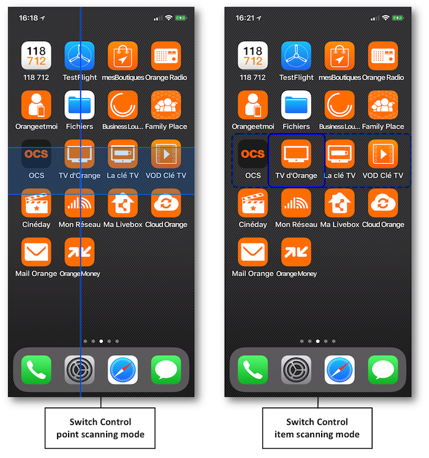
The element selection using the item mode works fine when the user interface isn't too complicated and uses native elements.
However, this mode may not be helpful according to the rationale behind some specific use cases and then needs to be customized.
The Xcode InterfaceBuilder shows the structure used for the example hereunder :
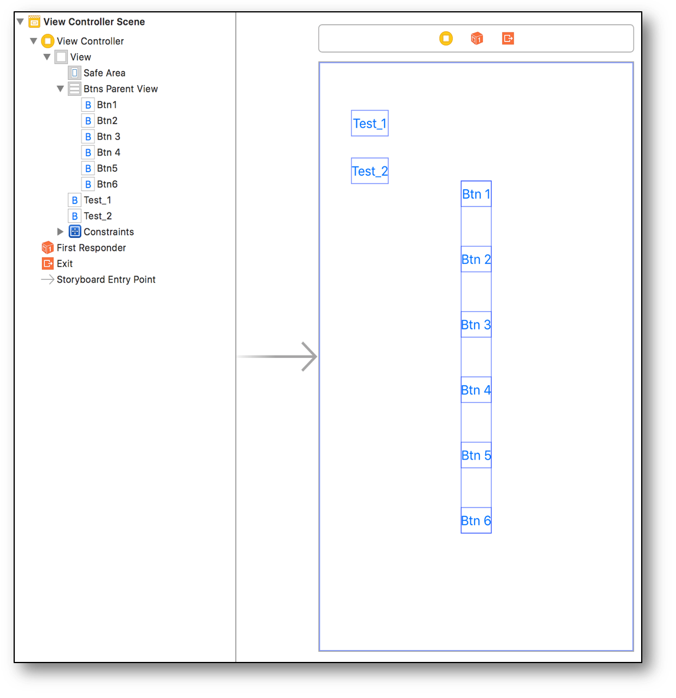
The following steps represent the customization :
- Creation of 2 groups {Test_1 + Test_2 ; Btn 5 + Btn 6} that must be selectable in the item mode.
- Within the other elements, only Btn 1 et Btn 2 must be separately accessible.
@interface ViewController2 ()
@property (weak, nonatomic) IBOutlet UIStackView * btnsParentView;
@property (weak, nonatomic) IBOutlet UIButton * btn1;
@property (weak, nonatomic) IBOutlet UIButton * btn2;
@property (weak, nonatomic) IBOutlet UIButton * btn5;
@property (weak, nonatomic) IBOutlet UIButton * btn6;
@end
@implementation ViewController2
- (void)viewDidAppear:(BOOL)animated {
[super viewDidAppear:animated];
//Creation of the first group 'testWrap' COMBINING the 'Test_1' and 'Test_2' buttons.
UIButton * testOneButton = [self.view viewWithTag:1];
UIButton * testTwoButton = [self.view viewWithTag:2];
CGRect testWrapFrame = CGRectUnion(testOneButton.frame, testTwoButton.frame);
UIAccessibilityElement * testWrap = [[UIAccessibilityElement alloc]initWithAccessibilityContainer:self.view];
testWrap.isAccessibilityElement = false;
testWrap.accessibilityFrame = testWrapFrame;
testWrap.accessibilityNavigationStyle = UIAccessibilityNavigationStyleCombined; //Property specific to Switch Control.
testWrap.accessibilityElements = @[testOneButton, testTwoButton];
//Creation of the 'secondGroup' SEPARATING the first two buttons.
CGRect secondGroupRect = CGRectUnion(_btn1.frame, _btn2.frame);
CGRect secondGroupFrame = [_btnsParentView convertRect:secondGroupRect
toView:self.view];
UIAccessibilityElement * secondGroup = [[UIAccessibilityElement alloc]initWithAccessibilityContainer:_btnsParentView];
secondGroup.isAccessibilityElement = false;
secondGroup.accessibilityFrame = secondGroupFrame;
secondGroup.accessibilityNavigationStyle = UIAccessibilityNavigationStyleSeparate;
secondGroup.accessibilityElements = @[_btn1, _btn2];
//Creation of the 'thirdGroup' COMBINING the last two buttons.
CGRect thirdGroupRect = CGRectUnion(_btn5.frame, _btn6.frame);
CGRect thirdGroupFrame = [_btnsParentView convertRect:thirdGroupRect
toView:self.view];
UIAccessibilityElement * thirdGroup = [[UIAccessibilityElement alloc]initWithAccessibilityContainer:_btnsParentView];
thirdGroup.isAccessibilityElement = false;
thirdGroup.accessibilityFrame = thirdGroupFrame;
thirdGroup.accessibilityNavigationStyle = UIAccessibilityNavigationStyleCombined;
thirdGroup.accessibilityElements = @[_btn5, _btn6];
self.view.accessibilityElements = @[testWrap,
secondGroup,
thirdGroup];
}
@end
class ViewController: UIViewController {
@IBOutlet weak var btnsParentView: UIStackView!
@IBOutlet weak var btn1: UIButton!
@IBOutlet weak var btn2: UIButton!
@IBOutlet weak var btn5: UIButton!
@IBOutlet weak var btn6: UIButton!
override func viewDidAppear(_ animated: Bool) {
super.viewDidAppear(animated)
//Creation of the first group 'testWrap' COMBINING the 'Test_1' and 'Test_2' buttons.
let testOneButton = self.view.viewWithTag(1) as? UIButton
let testTwoButton = self.view.viewWithTag(2) as? UIButton
let testWrapFrame = testOneButton?.frame.union((testTwoButton?.frame)!)
let testWrap = UIAccessibilityElement(accessibilityContainer: self.view!)
testWrap.isAccessibilityElement = false
testWrap.accessibilityFrame = testWrapFrame!
testWrap.accessibilityNavigationStyle = .combined //Property specific to Switch Control.
testWrap.accessibilityElements = [testOneButton!, testTwoButton!]
//Creation of the 'secondGroup' SEPARATING the first two buttons.
let secondGroupRect = btn1.frame.union(btn2.frame)
let secondGroupFrame = btnsParentView.convert(secondGroupRect,
to: self.view)
let secondGroup = UIAccessibilityElement(accessibilityContainer: btnsParentView!)
secondGroup.isAccessibilityElement = false
secondGroup.accessibilityFrame = secondGroupFrame
secondGroup.accessibilityNavigationStyle = .separate
secondGroup.accessibilityElements = [btn1!, btn2!]
//Creation of the 'thirdGroup' COMBINING the last two buttons.
let thirdGroupRect = btn5.frame.union(btn6.frame)
let thirdGroupFrame = btnsParentView.convert(thirdGroupRect,
to: self.view)
let thirdGroup = UIAccessibilityElement(accessibilityContainer: btnsParentView!)
thirdGroup.isAccessibilityElement = false
thirdGroup.accessibilityFrame = thirdGroupFrame
thirdGroup.accessibilityNavigationStyle = .combined
thirdGroup.accessibilityElements = [btn5!, btn6!]
self.view.accessibilityElements = [testWrap,
secondGroup,
thirdGroup]
}
}
The visual rendering is exposed hereunder :
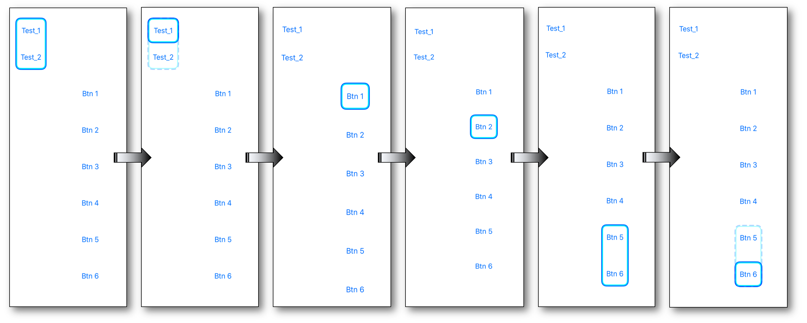
Once activated, the created groups allow to reach directly the elements which they contain.
Vocalized application name #
The same result as the VoiceOver gesture to set a custom label can be reached by code.
The rationale behind is to render a better vocalisation for an application name that could be very obscure according to its written abbreviation.
CFBundleSpokenName is the property list key that vocally replaces an application name and might take many different translations depending on the foreign languages.
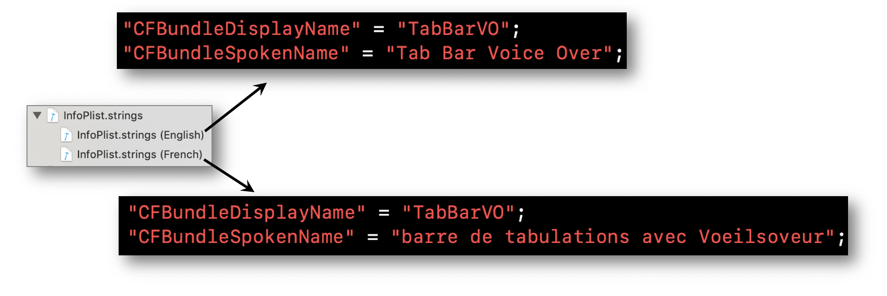
In the end, we go from a weird to an understandable vocalized name that is defined upstream with no user modifications.
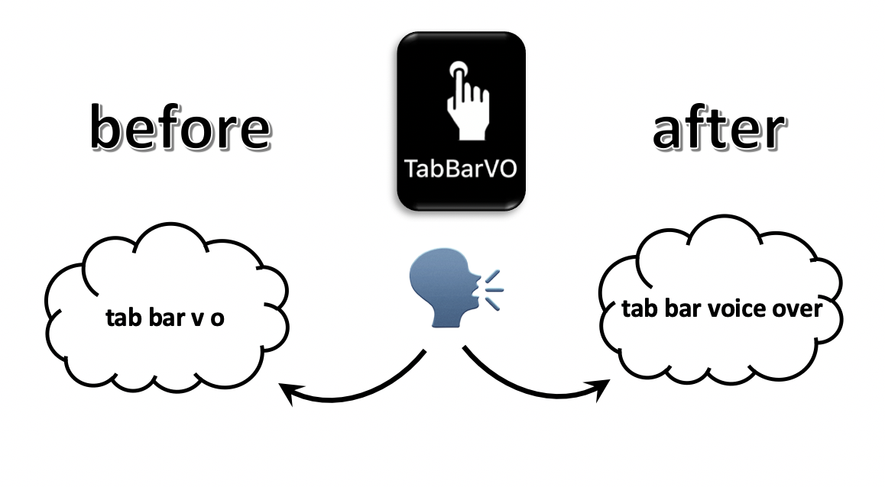